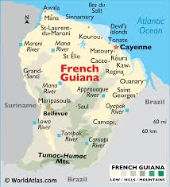
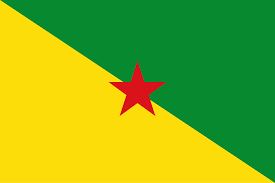

About French Guiana
French Guiana is an overseas region of France located on the northeastern coast of South America. It’s known for its rainforests, diverse wildlife, and as the launch site of European space missions. Though it’s part of France, it has a unique South American culture.
Region Map & Location
Absolute Location: About 4° N latitude and 53° W longitude.
Relative Location: French Guiana borders Brazil to the south and east, and Suriname to the west. It faces the Atlantic Ocean to the north.
Landforms & Topography
French Guiana is covered mostly by dense tropical rainforests, with mountain ranges like the Tumuc-Humac Mountains along the southern border. Its landscape includes low hills, lush river valleys, and sandy beaches along the coast.
Water Features
The region has many rivers, including the Maroni River, which forms the border with Suriname, and the Oyapock River, marking the border with Brazil. French Guiana also has coastal mangroves and wetlands that provide habitats for fish, birds, and other wildlife.
Climate & Biomes
French Guiana has a tropical climate, meaning it’s warm and humid with a wet and dry season. Most of the area is covered by the Amazon rainforest biome, with towering trees, unique plants, and a huge variety of animals.
Flora & Fauna
The forests of French Guiana are home to many exotic animals like jaguars, monkeys, and brightly colored birds like toucans. The region also has plants like orchids and giant water lilies. French Guiana is one of the most biodiverse places in the world.
Natural Resources
French Guiana’s resources include valuable minerals like gold, tropical fruits, and hardwood trees. The forests are also important, but protecting them is a big concern due to deforestation.
Capital & Major Cities
Capital: Cayenne
Cayenne is the capital and largest city, with other important towns being Saint-Laurent-du-Maroni, known for its history, and Kourou, where the space center is located.
Development & Economy
French Guiana’s economy relies on government jobs, the space center, and gold mining. Tourism is also growing because people want to experience the Amazon rainforest and see the rocket launches from Kourou.
Culture & Popular Sports
The official language is French, but people also speak Creole and indigenous languages. French Guiana has a mix of cultures, with influences from Europe, Africa, and South America. Football (soccer) is very popular, and canoeing is enjoyed along the rivers.
Government & Leadership
French Guiana is an overseas region of France, meaning it’s part of the country and follows French laws. A Prefect, who is appointed by the French government, represents the national government in French Guiana.
Flag & Currency
Currency: Since French Guiana is part of France, it uses the Euro (€) as its currency.
Famous People from French Guiana
Some famous people from French Guiana include Henri Salvador, a singer and comedian, and Félix Éboué, who was a politician and leader during World War II. Both have had an important impact on French Guiana’s history and culture.